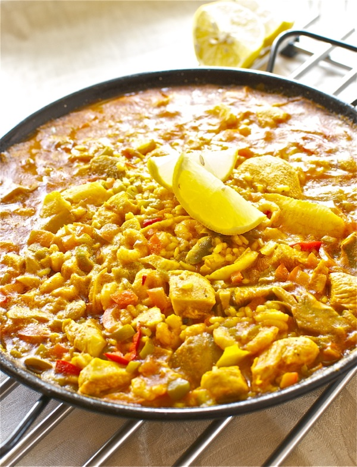

NOTICIAS RECIENTES
La cabra 'escapista' que ha dejado alucinados a todos los que han visto su increíble hazaña
En el vídeo, la cabra mueve y se coloca en una especie de balancín para darse un pequeño impulso y golpear con precisión un punto específico de la verja de su jaula, abriendo la puerta y escapando. A pesar de que estas habilidades suelen verse en primates, la destreza y habilidad que muestra esta cabra es simplemente impresionante. El vídeo ha dejado boquiabiertos a los colaboradores de Aruser@s Weekend, quienes no pudieron evitar expresar su asombro ante la habilidad del animal.

Un apretón, el culpable de que este autobús caiga carretera abajo
cuando llega un retortijón no avisa. Esto mismo es lo que parece que le ocurrió al conductor de un autobús. Al llegar a la primera parada disponible, el conductor paró el autobús y bajó corriendo en busca de un baño. ¿El problema? Que olvidó poner el freno de mano. Todos los pasajeros alucinaron al ir carretera abajo.
PEORES RESTAURANTES DE MADRID
La Parrilla de Galicia
¿Un gallego donde se come mal? ¡Venga ya! Eso es imposible, pensé cuando leí los comentarios de este local ubicado en la plaza de Tirso de Molina. Habría que tener mucha mala suerte. Porque, a malas, un lacón te comes. Y si te has quedado con hambre seguro que encuentras a alguna paisana que te fría un huevo. Malo será. Pues no: malo es. Era evidente que algo olía a podrido cuando de 58 opiniones, 32 eran pésimas. Escuchen: "Salimos vivos de milagro", "mal producto, mal precio, mal servicio", "el peor bar restaurante en el centro de Madrid", "no se salva ni el bocadillo de calamares". Un momento. ¿Bocadillo de calamares en un gallego? Y morcilla de Burgos, rape a la bilbaína o callos a la madrileña. ¿Y el pulpo? Fuera de la carta. No vaya a ser que te salte a la yugular.
La Carmela
Así quizás no habría entrado nunca en este céntrico restaurante, situado muy cerca de la Puerta del Sol, que cumple con todos los tópicos ad hoc: paella fluorescente, camareros ávidos de incautos y timadores profesionales con el carné de manipulador de alimentos. O en palabras de algunos ex clientes: "Estafa y pésimo", "engaño, el peor de la zona", "estafa", "¡si estás a tiempo, huye!". En mi caso ya era tarde cuando nos sirvieron una tapa de alioli líquida y avinagrada y acompañada de una cesta con pan duro. Antes habían intentado timarme diciéndome que no había medias raciones cuando la carta decía lo contrario.
